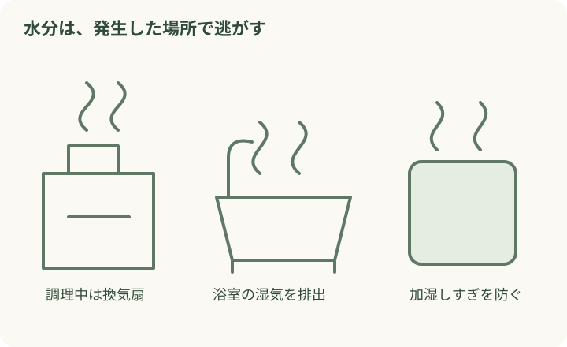
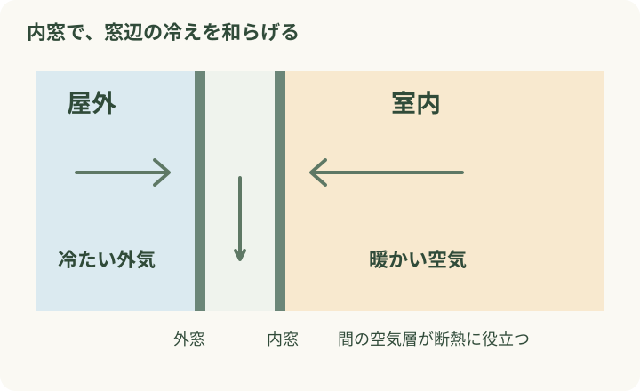

朝、カーテンを開けたら窓がびっしょり。ガラスを拭いて、サッシの溝も拭いて、それでも翌朝には元どおり。冬の朝に、こんな家事を増やしたくないですよね。
水滴を減らす鍵は、湿気をためないことと、窓を冷えにくくすること。今日できる工夫から、内窓を選ぶときの確認まで、毎朝の手間を減らす順に見ていきましょう。
毎朝の水滴拭きを減らすために、今日できること・窓で変えること
公開日：
 文｜エイスケ（住宅と教育の専門家）
文｜エイスケ（住宅と教育の専門家）

朝、カーテンを開けたら窓がびっしょり。ガラスを拭いて、サッシの溝も拭いて、それでも翌朝には元どおり。冬の朝に、こんな家事を増やしたくないですよね。
水滴を減らす鍵は、湿気をためないことと、窓を冷えにくくすること。今日できる工夫から、内窓を選ぶときの確認まで、毎朝の手間を減らす順に見ていきましょう。
冷たい飲み物を入れたグラスに、水滴が付くことがありますね。冬の窓でも同じように、室内の水蒸気が冷えた表面で水になります。[1][2]

水滴を放置すると、サッシのゴムやカーテンにカビが生えたり、窓台や壁紙を傷めたりすることも。まずは吸水クロスなどで拭き取り、カーテンを濡れた窓に触れさせないようにしましょう。
結露がひどいのはどの部屋か、朝だけなのか、洗濯物を干した日なのか。毎朝の様子が、対策を選ぶヒントになります。
室内には、調理や入浴、洗濯物、加湿器などから水分が出ています。まずは水分が多く出るタイミングで換気を。浴室の湯気が廊下や寝室へ広がらないよう、浴室の換気設備も活用します。[1][3]

窓を開ける換気は、2か所を開けて空気の通り道をつくるのがコツ。1回10分程度を目安に、寒さや部屋の状況に合わせて行います。[1] 24時間換気は説明書に沿って運転を続け、給気口やフィルターも手入れしましょう。石油ストーブやガスファンヒーターなど、室内で燃焼する暖房は水蒸気も発生させます。加湿器だけでなく、暖房の使い方もチェックすると原因を絞れます。
湿度に気を配っても、窓の近くに座るとひんやりする。そんな家では、窓の断熱も相談したいところです。内窓は、今ある窓の室内側に、もう一枚窓を取り付ける方法。間にできる空気の層が、外気の影響を受けにくくします。[4]

結露だけでなく、窓際の寒さや外の音が気になる場合にも、一緒に相談できます。まず寝室や長く過ごすリビングなど、困りごとが大きい窓から見てもらうと、工事範囲を決めやすくなります。
| 相談する方法・向く悩み | 確認したいこと |
|---|---|
| 内窓を付ける 今の窓を残して、寒さや音を和らげたい | 取付けスペース、開閉の手間、カーテンとの干渉、掃除のしやすさ |
| 窓を交換する 枠の傷みや開け閉めの不便も直したい | 既存窓の傷み、開き方、壁まわりの工事範囲、工期 |
| ガラスを交換する 使える枠を残して、ガラスの性能を見直したい | 今のサッシへの適合、枠に残る結露、期待できる改善範囲 |
内窓を付けても、湿度や使い方によって結露が起きる場合はあります。特に内窓と外窓の間へ湿った空気が入る使い方は、外窓側の結露につながることがあります。[5] 工事後の換気や開閉方法まで説明してもらいましょう。
ベランダに出る窓なら、二重の窓を開け閉めする手間が増えます。洗濯かごを持って通る場面まで想像して、取っ手の位置や動かしやすさをショールームで確かめておくと、工事後の「思っていたのと違う」を減らせます。
現地調査で「結露がひどいです」と伝えるだけでなく、普段の状態を見せると相談が具体的になります。
窓と家具、暖房、加湿器の位置が分かる写真。
拭く前の水滴。ガラス・枠・窓台のどこが濡れているか。
ゴムのカビ、壁紙の剥がれ、木部の変色を近くから。
部屋干しの有無、困る時間帯、温湿度計の表示、予算。
見積書は、窓ごとのサイズ・ガラス仕様・取付け部材・工事費・処分費を分けてもらいましょう。マンションでは管理規約や申請の要否も確認。補助制度は、契約時点の対象工事と申請条件を施工者に確認します。
こうした場合は、雨漏りや配管など別の原因も考えられます。濡れた日時と場所を撮影し、原因の確認から依頼しましょう。
まずは今夜の湿度と換気を見直す。それでも毎朝の水滴拭きが続くなら、窓そのものを相談する。この順番で、家事をひとつ軽くしていきましょう。
Q. エアコンをつけていれば換気になりますか？ A. 多くのエアコンは室内の空気を循環させているため、換気は別に必要です。換気機能付きの機種は、説明書で使い方を確認してください。
Q. 内窓を付ければ、水滴拭きは完全になくなりますか？ A. 室内の湿気や窓の条件によります。今の結露の場所を見てもらい、換気の使い方と合わせて提案を受けましょう。「絶対ゼロ」より、毎朝の負担と窓辺の寒さをどう減らすかを具体的に話すと選びやすくなります。
「結露の多い部屋で、加湿器や洗濯物はどう使っている？」 窓の工事を考える前に、部屋ごとの違いを一度見比べてみましょう。
確認日：2026年11月8日。本文と図は独自に制作。
内窓、複層ガラス・断熱サッシ、24時間換気設備(給気口・排気口・フィルター)、壁・天井・床の断熱、調湿壁材(調湿タイル・調湿パネルなど)、温湿度計
窓のリフォーム・機能を確かめる ↗空気環境の機能を確かめる ↗関連記事
この記事を書いた人｜エイスケ
1986年生まれ。実家の工務店・不動産に10年間従事したのち、教育の世界へ。住宅と教育、両方の視点から「豊かな暮らし」をテーマに執筆します。※本コラムは筆者個人の見解・経験に基づくものです。最終的な判断は各分野の専門家にご相談ください。